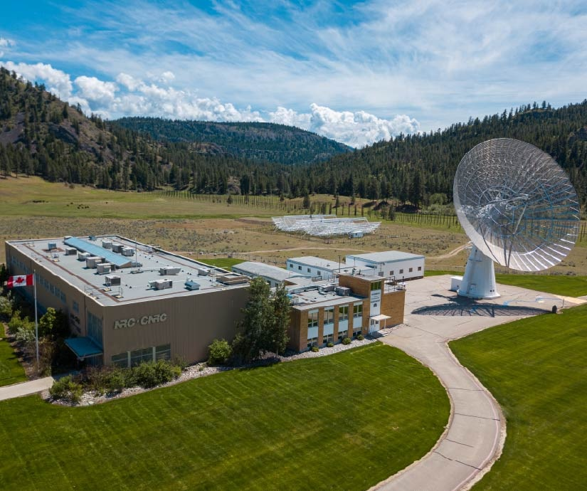
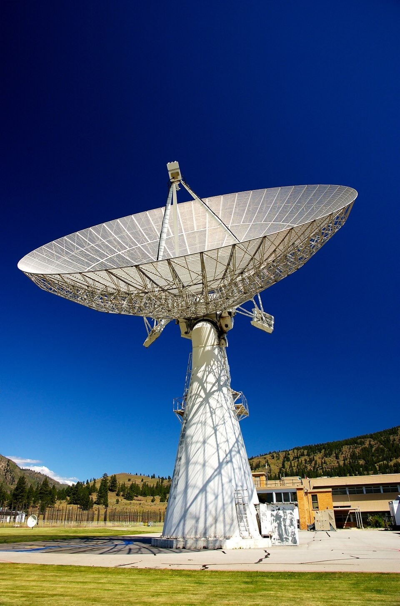

Co-op experience · Summer 2026
Junior Telescope Engineer
At NRC’s Dominion Radio Astrophysical Observatory, I worked on the John A. Galt Telescope—building Python tests that connected software commands to real telescope behaviour, from receiver hardware and motion control to recorded scientific data.
- Organization
- National Research Council Canada
- Term
- May–August 2026
- Location
- Penticton, BC
- Tools
- Python, pytest, Linux, GitLab CI, Docker, HDF5
01 / Assignment
Test the physical result—not just the API response.
The John A. Galt Telescope brings together mechanical drives, RF receiver equipment, digital signal processing, scientific data storage, and software services. I worked at the boundaries between those systems.
I developed Python and pytest integration tests that issued commands, observed live telemetry, verified physical state and scientific outputs, and returned equipment to a safe state after failures.
- Receiver
- RF hardware state
- Motion
- Control telemetry
- DAQ
- Scientific outputs


02 / Contributions
Three areas of ownership
03 / Takeaway
Clarity is a safety feature.
I learned to use commands, telemetry, timestamps, coordinate transformations, logs, and recorded artifacts together—separating hardware behaviour from test, timing, network, configuration, and data-interpretation problems.
Public disclosure: This page excludes NRC source code, internal identifiers, credentials, operating limits, and non-public data.